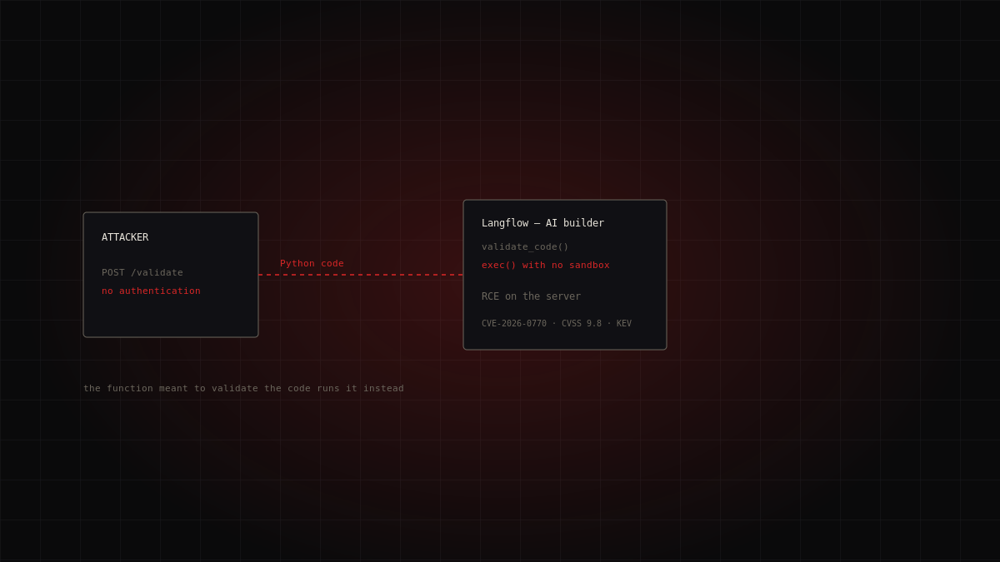
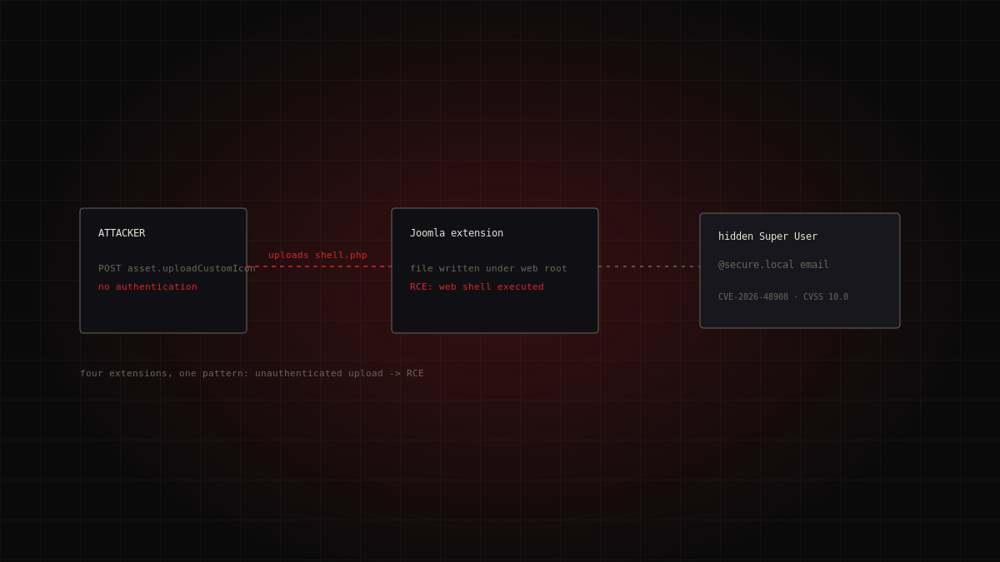
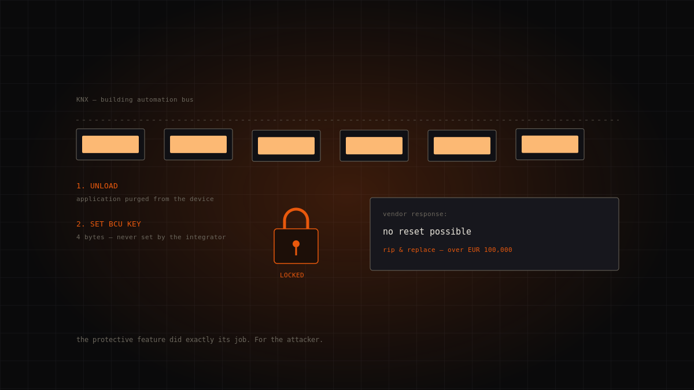
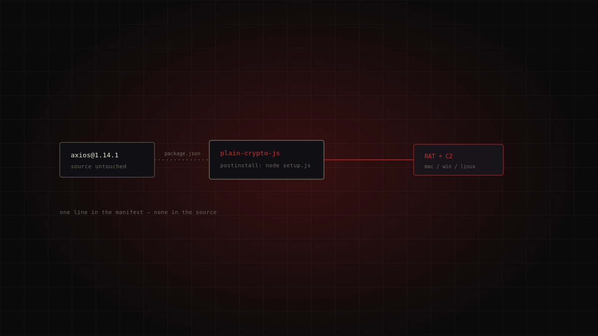
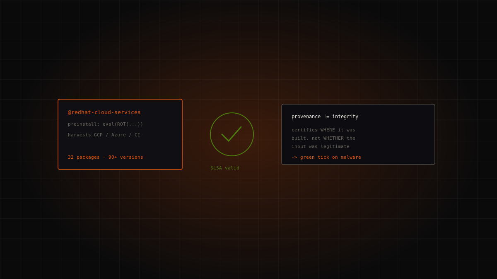
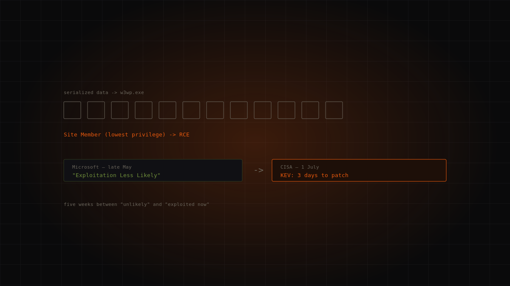

Topic · Threats
Malware and attacks
How cyber threats are classified, and where to find a shared taxonomy.

Dossiers in this section
7 dossiersThe AI-agent builder that runs a stranger's code: CVE-2026-0770 in Langflow
Langflow is a visual tool for building flows and agents on top of language models. The function meant to «validate» user-supplied code, validate_code(…
Unattributed · opportunistic exploitation (public PoCs on GitHub) · critical
Continue reading →
Four Joomla extensions, one pattern: the unauthenticated-upload wave that plants ghost admins
In a few weeks four widely installed Joomla extensions — SP Page Builder, iCagenda, PageBuilder CK and Balbooa Forms — landed in CISA's catalog o…
Unattributed (no named actor or campaign; disclosure by Phil Taylor / mySites.guru) · critical
Continue reading →
The module that moves the payments, taken without a login: CVE-2026-46817 in Oracle E-Business Suite
Oracle Payments is the payment engine inside Oracle E-Business Suite: the point where the company's finance applications talk to banks and card n…
Unattributed (first observed on Defused honeypots; no public campaign or actor) · critical
Continue reading →
No malware, no ransom, no patch: the KNXlock case
On 15 July 2026 CISA added to the KEV catalog a 2023 CVE describing a 2021 attack. There is no malicious code: the attackers purge a building's K…
Unknown — no attribution, no ransom demand · high
Continue reading →
Axios: the manifest, the RAT, and the token nobody revoked
On 31 March 2026 two malicious axios releases added a booby-trapped dependency without touching a single line of source code. npm had rolled out OIDC …
Unattributed actor · critical
Continue reading →
Miasma: valid SLSA provenance for malicious packages
Thirty-two Red Hat npm packages were published with malicious payloads — carrying valid SLSA provenance attestations. The technology built to guarante…
TeamPCP (derived tooling) · high
Continue reading →
"Exploitation Less Likely", then three days to patch
Microsoft rated it "Exploitation Less Likely". Five weeks later CISA put it in the KEV catalog with a three-day remediation window. A lesson…
Unattributed · high
Continue reading →The topic in brief
A common language: MITRE ATT&CK
Talking about “viruses” isn't enough. The security community uses MITRE ATT&CK, a public knowledge base cataloguing tactics (the “why” of an attack step) and techniques (the “how”), with stable identifiers. It's the vocabulary advisories and reports use to describe intrusions. In every one of our dossiers, technique IDs are copied from advisories, never inferred.
The threats that actually matter
The ENISA Threat Landscape, the annual report of the EU cybersecurity agency, identifies seven prime threats: attacks on availability, ransomware, threats to data, malware, social engineering, information manipulation, and supply-chain attacks. The 2025 edition analysed 4,875 incidents between July 2024 and June 2025, with a clear trend: different groups reusing tools and techniques.
Defence starts with understanding
Most attacks don't use an exotic technique: they exploit unpatched systems, weak credentials, unnecessary exposure. Recognising threat families and mapping them onto a shared taxonomy is the first step to prioritising defences on what actually happens, not on what makes the biggest headlines.
FAQ
- What is MITRE ATT&CK?
- A public knowledge base of attack tactics and techniques, with stable identifiers, used as a common language across security advisories.
- What are the EU's main threats?
- Per the ENISA Threat Landscape: availability, ransomware, threats to data, malware, social engineering, information manipulation, and supply-chain attacks.